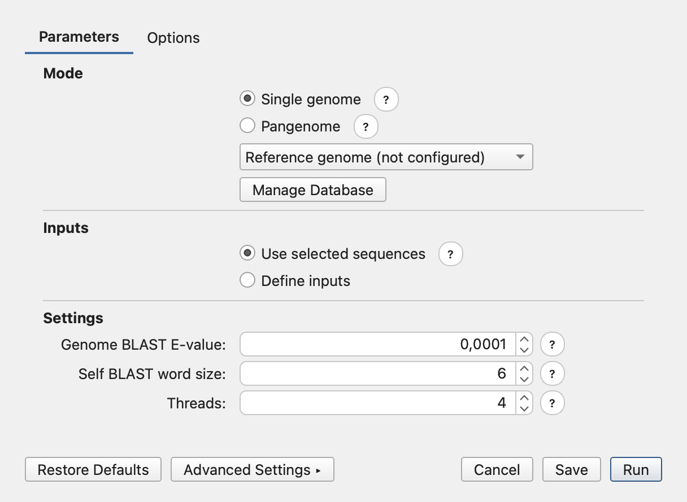
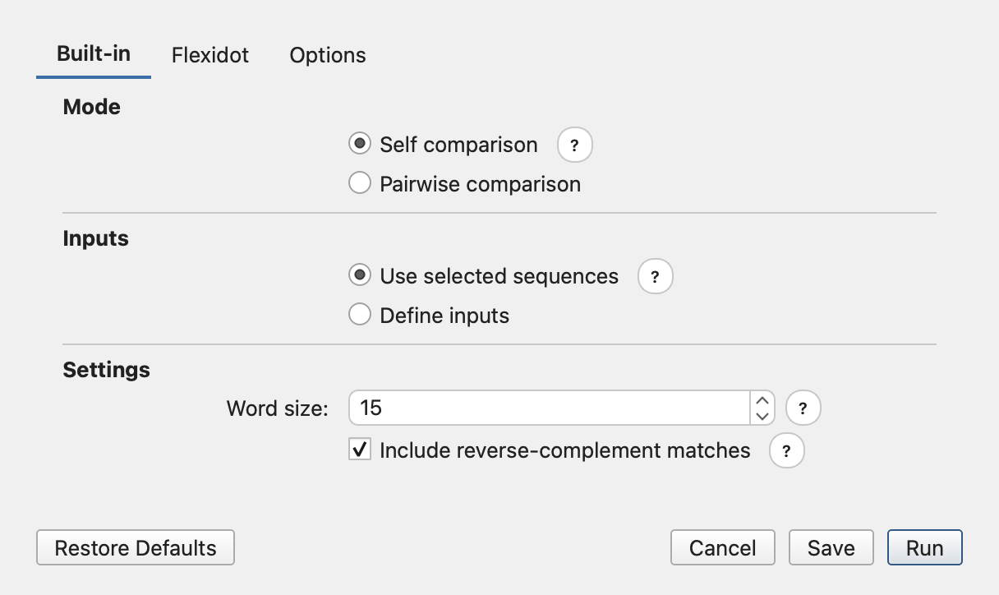
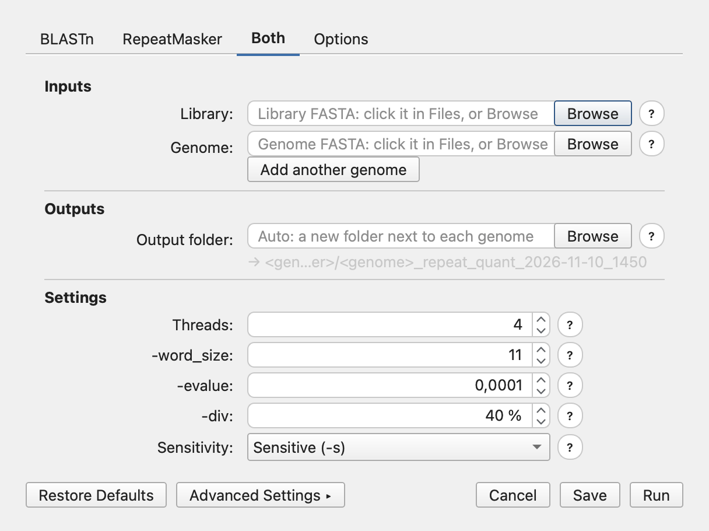

Chapter 11Repeat analysis
11.1TE-Aid
Toolbar: TE-Aid · Tools → Curate → TE-Aid
Makes an interactive HTML report for one consensus sequence, in the style of TE-Aid: its copies in the genome and how much of the consensus each covers, the coverage of the consensus by genomic hits, a self-dotplot, and the terminal repeats and ORFs. It is the clearest single view of whether a consensus is finished.

| Section | Setting | Default | Meaning |
|---|---|---|---|
| Mode | Single genome / Pangenome | Single genome | Search one genome, or every genome of a pangenome |
| Genome | reference genome | Or a saved BLAST database | |
| Settings | Genome BLAST E-value | 0.0001 | Threshold for finding copies |
| Self BLAST word size | 6 | Seed length for the self comparison | |
| Threads | For both BLAST runs | ||
| Advanced | Line transparency | Opacity of the hit lines | |
| Full-/mid-length hits | Colour hits by length relative to the consensus |
Output: <name>_TEAid.html (one genome) or <name>_pTEAid.html
(pangenome), shown in Preview.
11.2Dotplot
Toolbar: Dotplot · Tools → Visualize → Dotplot
Compares sequences with themselves or with each other. The window has two engines.

Built-in (fast, interactive):
| Setting | Default | Meaning |
|---|---|---|
| Mode | Self comparison | Self: each file against itself (<name>_self_dot.paf). Pairwise: every sequence against every other (<first>_multi_dot.paf); with three or more sequences the self comparisons fill the diagonal |
| Word size | 15 | Length of exact matches. Larger is faster and less sensitive |
| Include reverse-complement matches | on | Show inverted repeats (TIRs) as well |
The result opens in the dotplot view, the same as the Dotplot (Self) tab of a sequence.
Flexidot writes publication-style dotplots with Flexidot, and shades the annotations:
| Setting | Meaning |
|---|---|
| Mode | One plot for all files, or one per file |
Output format (-f) |
HTML (interactive) or an image |
k-mer (-k), sequence type (-t) |
Word length; DNA or protein |
Show GFF features (-g) |
Shade the annotations |
Advanced: -S, --max_n, -A |
Mismatches allowed in a word, maximum N content, line width |
With HTML output, clicking a region in the dotplot jumps the Overview of that sequence to the same position (this needs the RepeatViewer build of Flexidot, installed with RepeatViewer).
Outputs: <name>_flexidot.html, <name>_flexidot.gff,
<name>_flexidot_legend.png.
11.3Repeat Quantify
Tools → Quantify → Repeat Quantify
Measures how much of a genome a library of monomers, satellites or TEs accounts for: copy numbers, arrays, genome fraction and divergence. Aimed at tandem repeats, where "how many copies, in how many arrays, and how much of the genome" is the question.

Inputs: the Library (the monomer or consensus FASTA) and the Genome. Add another genome runs the same library against several genomes, one report each. Click files in the Files panel to fill the fields.
Engines, one per tab: BLASTn (fast, bundled), RepeatMasker (installed separately; also gives a divergence landscape), or Both, side by side.
| Setting | Default | Meaning |
|---|---|---|
| -word_size (BLASTn) | 11 | 7 can make BLAST hang on large genomes |
| -evalue (BLASTn) | 0.0001 | |
| -div (RepeatMasker) | 40 % | Most divergence counted |
| Sensitivity (RepeatMasker) | Sensitive (-s) |
RepeatMasker speed preset |
| Advanced: minimum identity, minimum coverage | 0 = none | -perc_identity and -qcov_hsp_perc |
Output: a new folder for each run, by default next to the genome:
<genome>_repeat_quant_<date>_<time>/, with an HTML report and TSV and GFF
tables. The report has one row per family:
| Column | Meaning |
|---|---|
| monomer_len | Length of the library sequence (the period), bp |
| copy_number | covered_bp ÷ monomer length (a fraction when less than one monomer is covered) |
| hits | Number of alignment pieces |
| arrays | Hits merged into continuous blocks (about the number of array loci) |
| covered_bp | Genome bp covered, overlaps counted once |
| %target | covered_bp as a percentage of the genome |
| mean_array_bp, max_array_bp | Mean and longest array |
| mean_identity | Length-weighted mean identity to the library sequence (high = young or conserved) |
| mean_divergence | RepeatMasker Kimura divergence (high = old) |
| scaffolds | Number of genome sequences hit |
If a family name appears twice in the library, the report warns you: their hits are merged into one row. Give every record a unique name. The genome BLAST index is kept between runs; File → Setting → General → Diagnostics → Clear cache removes it.
11.4Genome plots
Toolbar: Visualization · Tools → Visualize
Three interactive plots of repeats along a genome. They need a reference genome (see Manage Database). The windows stay open while you click files in the Files panel to fill their fields.
Genome density plot
Where repeats sit along the chromosomes, in windows.
| Input | Accepts |
|---|---|
| TE masking file | RepeatMasker .out or a BLAST hit table (_bn.txt) |
| TE consensus file | The library FASTA |
| Other annotation file | GFF, GTF, BED or VCF (genes, for example) |
| DNA methylation file | Methylation coverage (Bismark .cov, modkit bedMethyl) |
Add another … under each field adds more tracks; tracks are drawn in field order. Options: what the height shows (for example total TE length per window), colour by superfamily, separate strands, merge overlapping hits, a difference track between two TE sources, which annotation features to draw, minimum methylation coverage, window size, chromosome order and which chromosomes to show.
Output: <name>_bn_den_plot.html (named after the source: bn, RM, …),
<name>_multi_dens_plot.html for several sources, and …_region.html for a
zoomed region.
TE divergence plot
The age profile of a family: a histogram of divergence from the consensus
(1 − identity). A sharp peak at low divergence means a recent burst; a broad
distribution means long, older activity. Inputs: RepeatMasker .out or BLAST
hit tables; setting: bin size. Output: <name>_bn_div_plot.html or
<name>_multi_div_plot.html.
TE abundance plot
Which families dominate a genome: families ranked by the genome share they
occupy, one curve per RepeatMasker .out file. Settings: Y axis (percent of
genome, or bp) and the number of top families. Output:
<name>_RM_abund_plot.html or <name>_multi_abund_plot.html.